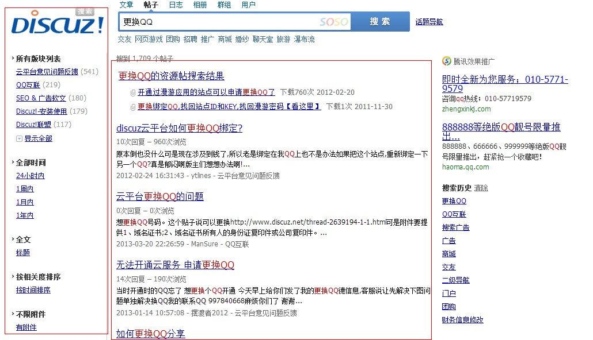
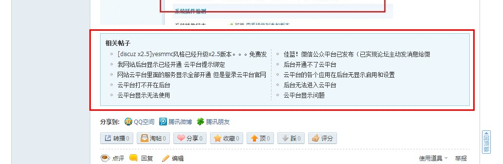

纵横搜索
纵横搜索，以SOSO搜索技术为支撑，以腾讯云计算服务器为载体，帮助站长节省服务器资源，为会员提供精准、专业的全文搜索服务。
纵横搜索可以帮助您了解站内用户都在搜什么，掌握网友搜索动向便于您更好的迎合网友需求制造相应话题；纵横搜索还可以最大限度的缓解您网站因搜索带来的服务器压力，让所有用户都可以轻松使用搜索：
一、解决服务器负载问题：
通常，在网站长期数据积累的情况下，站点是不能开启全文检索的，因为全文检索会搜网站全部历史数据，基本上“一搜就挂”，纵横搜索正是为了解决这个问题而生。
Discuz!纵横搜索服务由腾讯SOSO提供服务器及排序算法支持，网站无须考虑服务器、宽带压力及因全文检索可能带来的效率问题。
二、搜索结果更精准：
Discuz!纵横搜索服务由SOSO提供后端技术支持并深度结合Discuz!产品，通过独有算法对帖子各项属性进行计算后给出具有更高价值的帖子排序结果，让搜索变得更加精准，提升用户访问深度。
三、提高网友访问深度，提升游客转化率：
从已有的站点数据抽样得出：人均访问页数提升8.32%；当游客从搜索引擎点入网站时给予相关帖推荐，让用户停留时间更长，甚至注册为活跃用户。
1、热搜词推荐：
2、热门话题词推荐：
3、MINI推荐页推荐,由其他搜索引擎进入网站时显示的帖子推荐：
4、相关帖子推荐
四、其他功能及特点